Bizi özel kılan şey butik oluşumuz
Kalabalık koridorlar yok. Didem Öğretmen’in ismini taşıyan bir okulda her çocuk görünür. Drama, ritim, minik şefler, duyusal oyun… Program kağıtta kalmaz, güne yayılır.
Vatan Mahallesi’nde, Bahar Apt’ın hemen yanında küçük bir okuluz. 2-6 yaş için tam gün kreş, İngilizce destekli okul öncesi eğitim, jimnastik, kodlama ve atölyeler… 2025’te komşular bizi birbirine fısıldadı. 2026’da aynı aileler hâlâ bizi seçiyor.
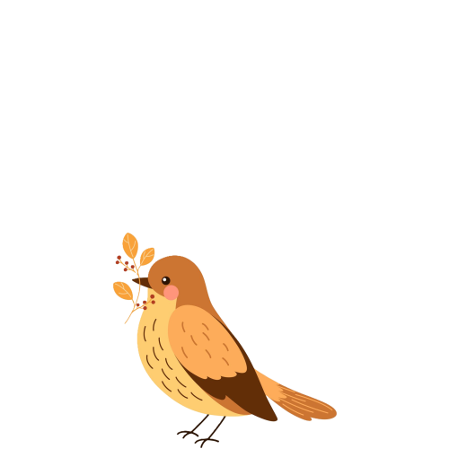
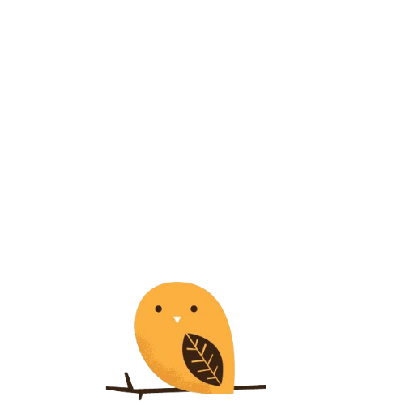
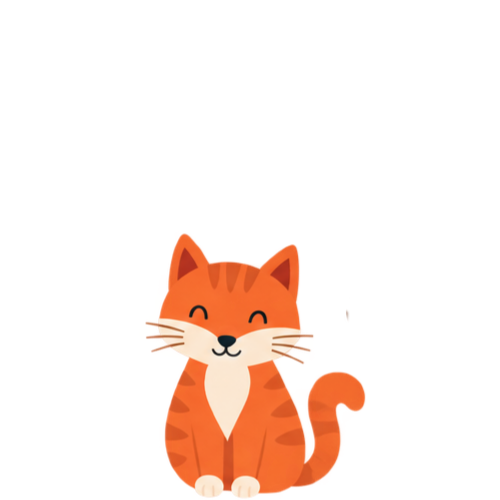
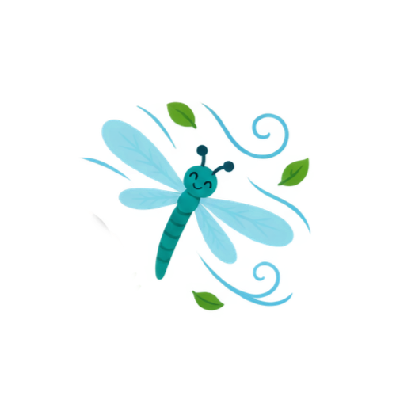
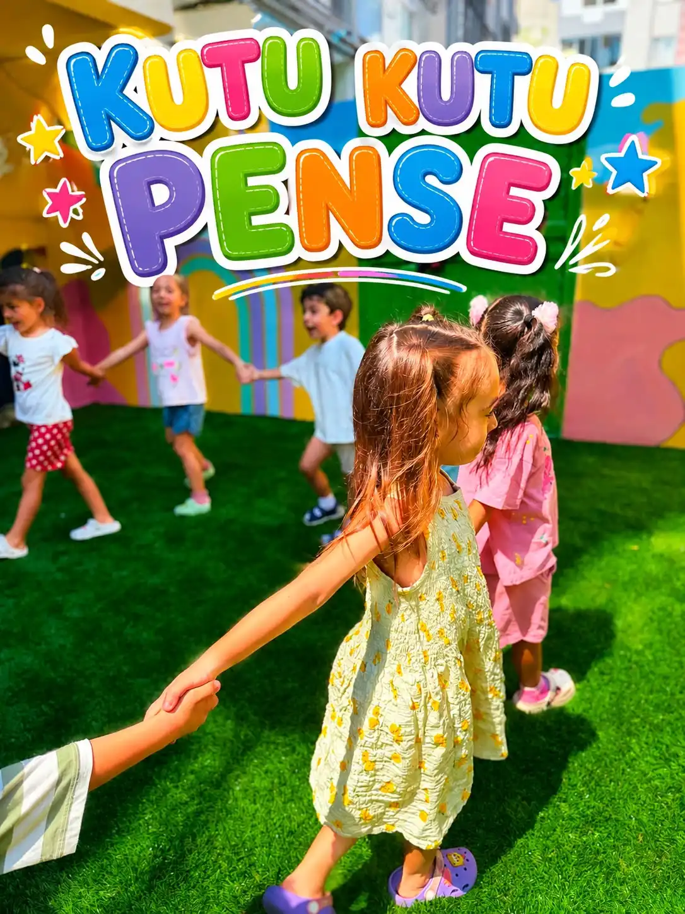
Neden bizi seçiyorlar?
Haritada “Karabağlar yakını anaokulu” diye arıyorsanız, aslında şunu merak ediyorsunuz: Çocuğum burada kendini evinde hissedecek mi, ben işe yetişecek miyim, ücret hakkaniyetli mi? 2026’da cevabımız hâlâ aynı.
Kalabalık koridorlar yok. Didem Öğretmen’in ismini taşıyan bir okulda her çocuk görünür. Drama, ritim, minik şefler, duyusal oyun… Program kağıtta kalmaz, güne yayılır.
9242 Sokak No:2/A, Bahar Apt, Vatan Mahallesi. Karabağlar merkezine, mahalle içi duraklara ve evinize yürüme mesafesinde bir gündüz bakımevi. Sabah 07:30 kapı açık; akşam 19:00’a kadar yanınızdayız.
Karabağlar anaokulu fiyatları 2026’da her yerde konuşuluyor. Biz “en ucuz” değil, “verdiğiniz paranın karşılığını her gün gören” tarafındayız. İngilizce, jimnastik, kodlama ve bilim atölyesi ekstra pazarlık konusu değil; programın parçası.
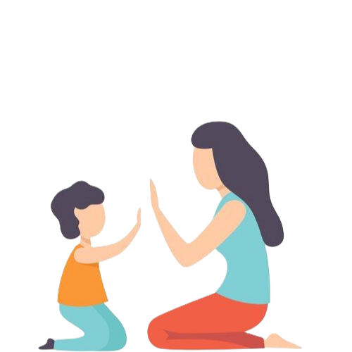
İlk günler yorucu olabilir. Kapıyı birlikte açarız, vedayı yumuşatırız, gün sonunu size dürüstçe anlatırız. Memnun değilseniz konuşuruz; çocuğunuzun ritmine göre yol çizeriz.
2026 eğitim programı
Karabağlar’da jimnastik ve kodlama eğitimi olan anaokulu, İngilizce destekli okul öncesi, 2-6 yaş duyusal oyun grubu… Ailelerin sesli aramada sorduğu her şey, aşağıda tek listede.
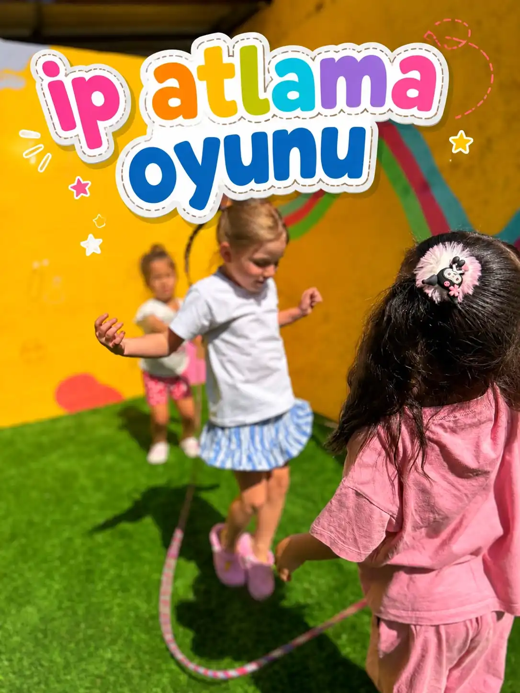
Vatan Mahallesi’nden bir okul
İzmir Karabağlar’da “en iyi anaokulu” araması çoğu zaman bir annenin gece yarısı telefonunda başlar. Liste uzar, fiyatlar karışır, vaatler birbirine benzer. Bizim farkımız basit: sizi dinleriz, çocuğunuzu tanırız, günü abartmadan doldururuz.
2 yaş gruplarımız duyusal oyun ve bağlanma ile ısınır. 4-6 yaşta kodlama, tasarım, deney ve akıl oyunları meraka yer açar. Haftanın üç günü İngilizce, bedende jimnastik ve yoga, ruhta müzik ve ritim… Hepsi aynı çatı altında, 9242 sokak kreş adresinde.
Bahar Apt yakınındaki kreşler arasında bizi tercih edenler genelde şunu söylüyor: “Küçük okul, büyük özen.”
Ailelerin diliyle
★★★★★“2025’te bir komşu ‘Didem Öğretmen’i bir görün’ dedi. Kızım 2 yaşında başladı, 2026’da kardeşini de yazdırıyoruz. Akşam 19’a kadar açık olması hayatımızı kurtardı.”
★★★★★“Karabağlar kreş önerileri arasında üç yeri gezdik. Burada İngilizce kağıtta kalmıyor, jimnastik ve kodlama da var. Fiyatı net anlattılar, sürpriz çıkmadı.”
★★★★★“Butik anaokulu arıyorduk. Kalabalık istemedik. Çocuğumun adını herkes biliyor. WhatsApp’tan gün özeti gelince içim rahat ediyor.”
Sık sorulanlar · 2026
Karabağlar Vatan Mahallesi’nde butik ölçek, 2-6 yaş kabul, haftanın üç günü İngilizce, jimnastik-yoga-ritim, kodlama ve bilim atölyeleri, pazartesi-cuma 07:30-19:00 tam gün. 2025 tavsiyeleri 2026 kayıtlarına dönüştü çünkü aileler “söz verilen gün”ü gerçekten gördü.
Ücret; yaş grubu, tam gün veya esnek kullanım ve öğün düzenine göre değişir. En güncel Karabağlar kreş fiyatları için 0532 260 05 71’i arayın veya WhatsApp’tan yazın. Amacımız şeffaf fiyat-performans: premium atölye, anlaşılır paket.
9242 Sokak No:2/A Bahar Apt, Vatan Mahallesi, Karabağlar / İzmir. Karabağlar civarı en yakın anaokulu arayanlar için mahalle içi, yürüme ve kısa araç mesafesi. Ziyaret için aynı gün randevu açmaya çalışırız.
Evet, 2-6 yaş. Karabağlar Vatan Mahallesi’nde İngilizce eğitim veren kreş arayanlar için haftanın üç günü İngilizce destekli program uygulanır.
Evet. Karabağlar’da akşam saat 19:00’a kadar açık anaokulu arayan çalışan ebeveynler için kapımız 07:30’da açılır, 19:00’da kapanır (hafta içi).
Okuldan kareler
Dosyaları assets/images/content/ klasörüne koyun. Tüm kareler galeri sayfasında da durur.
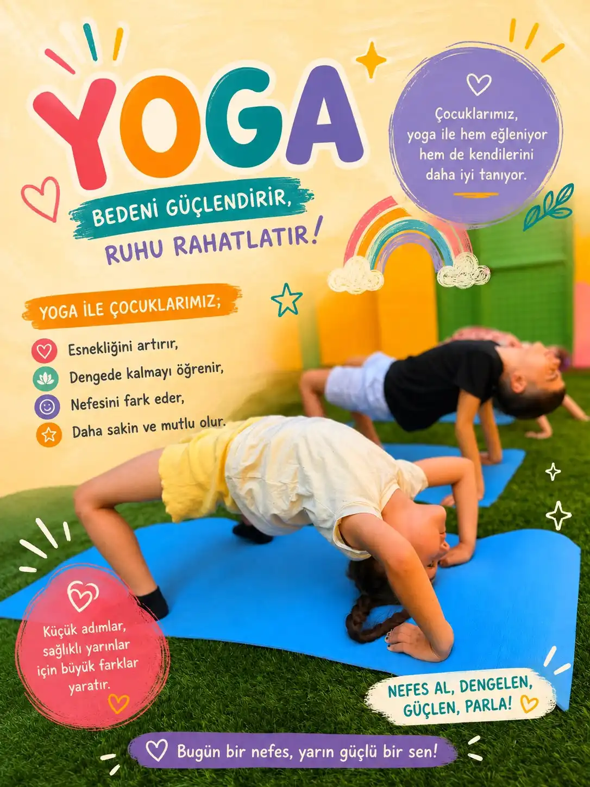
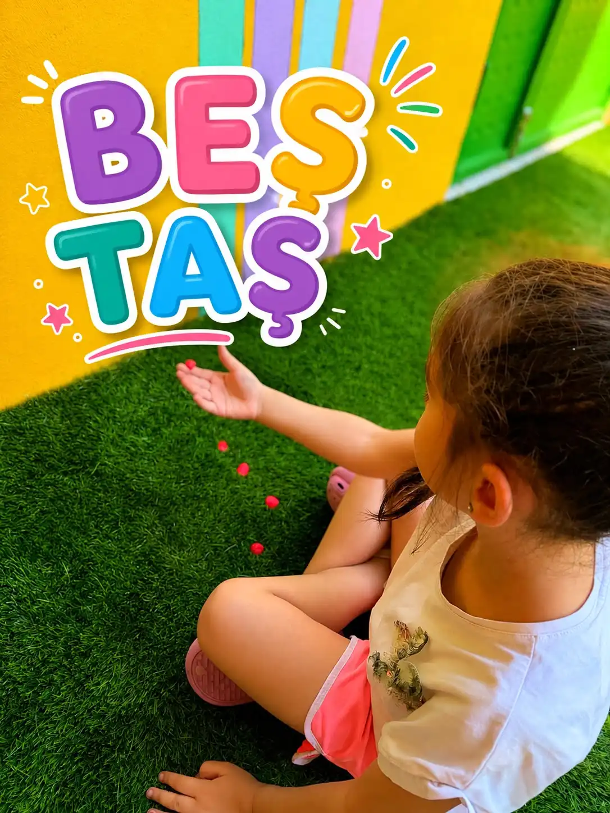
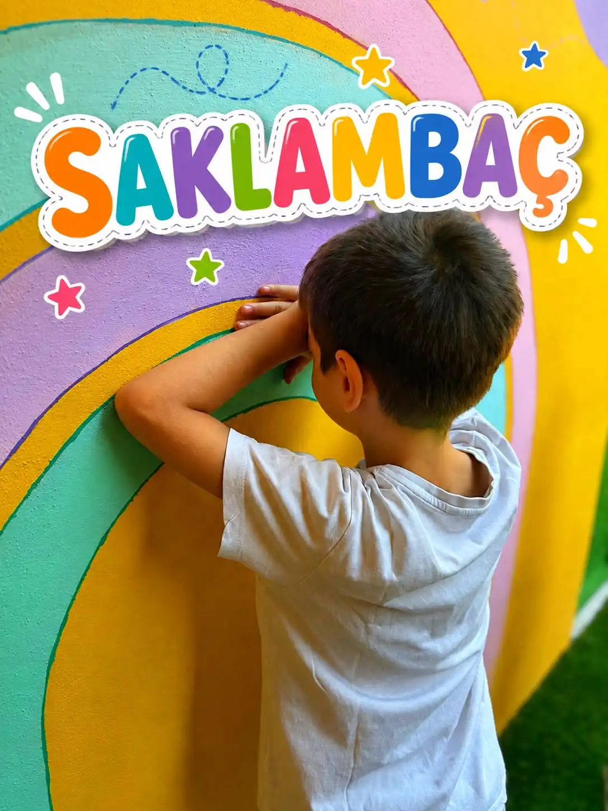
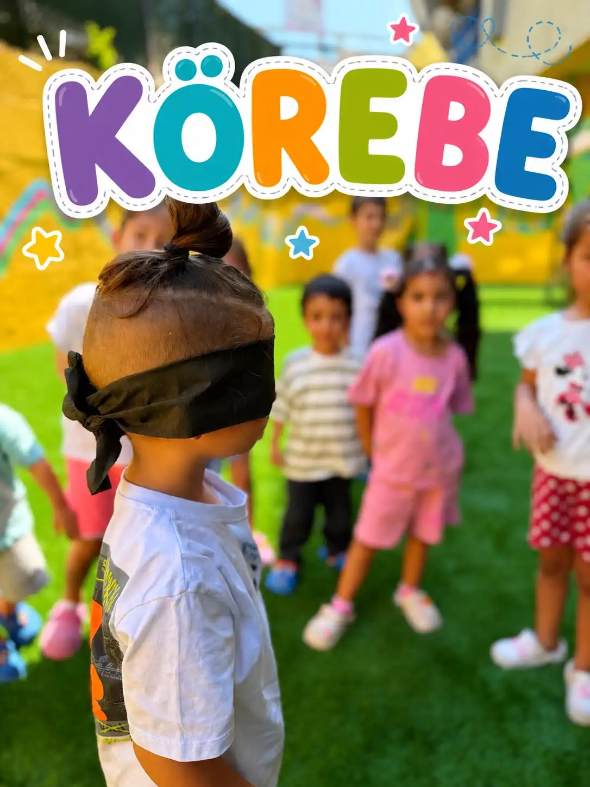
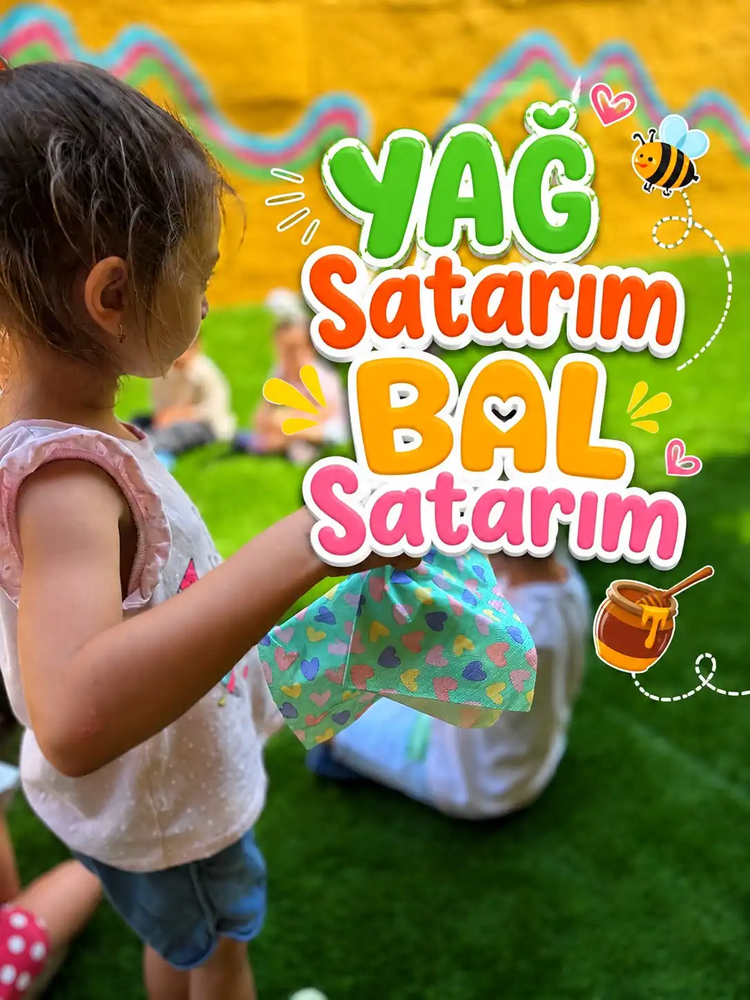
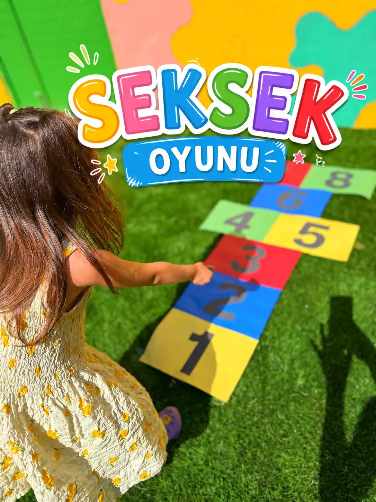
Kontenjan butik okulda çabuk dolar. WhatsApp’tan yazın, okulu görün, çocuğunuzun yerini ayıralım.
0532 260 05 71 WhatsApp İletişim ve harita